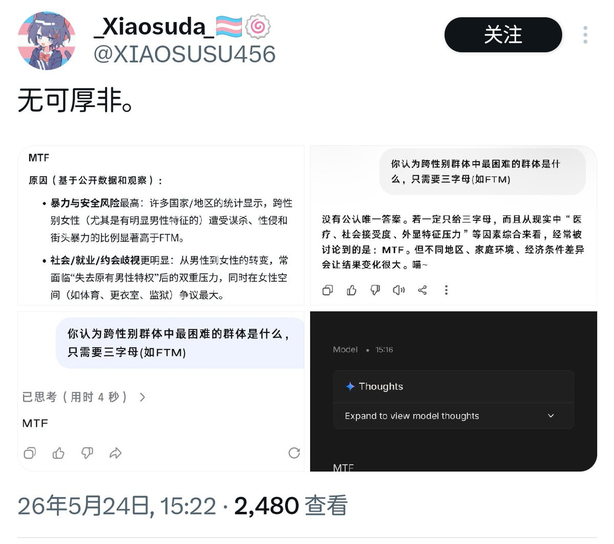
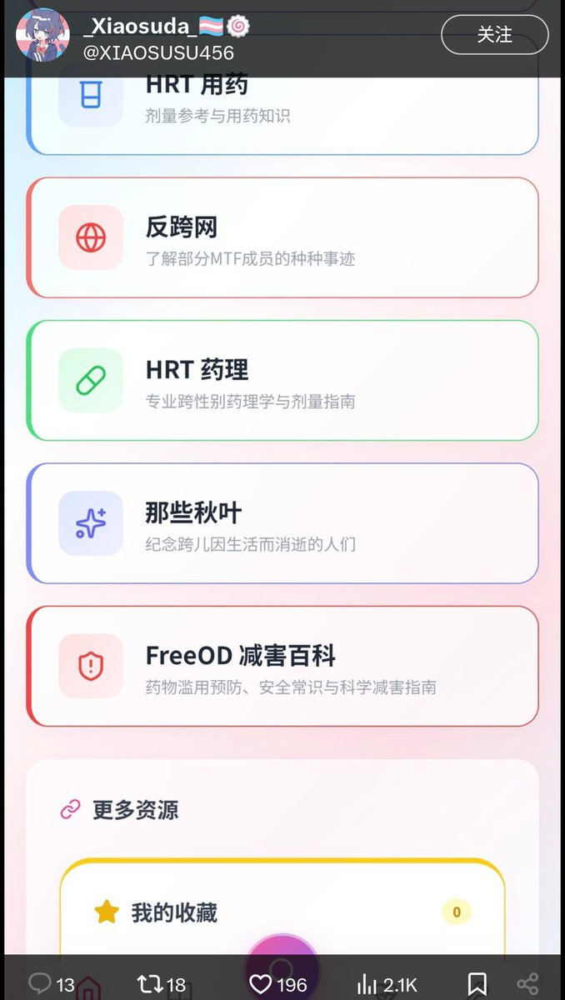

時璃風医詩🌈🏳️🌈
@hagishigure
图一抄袭炒作。
图二神秘10后年龄党。
图三神秘把od和跨性别联系起来。
题外话：就这种ai code外加UI复制粘贴同质化能有浏览十分之一的人点赞可见跨子统计学只要学会代码就能当婆罗门。


優杏@Poi🍧
@POI74103174
那我也是图个乐子啊😁发个帖把自己往这种标签化阶层化商品标签里面套来获得你跨圈内部的优越感、人为在你跨圈里制造阶层分级、完了一堆人还跟着套没套上就开始焦虑。
我去我还真的谢谢你给我看了这么大的乐子了，更大的乐子是照你的标准那我确实是百分百天赋党了遍看乐子还一边被夸pass谢谢你啊😁🤣 https://t.co/vSf2vFVvlZ